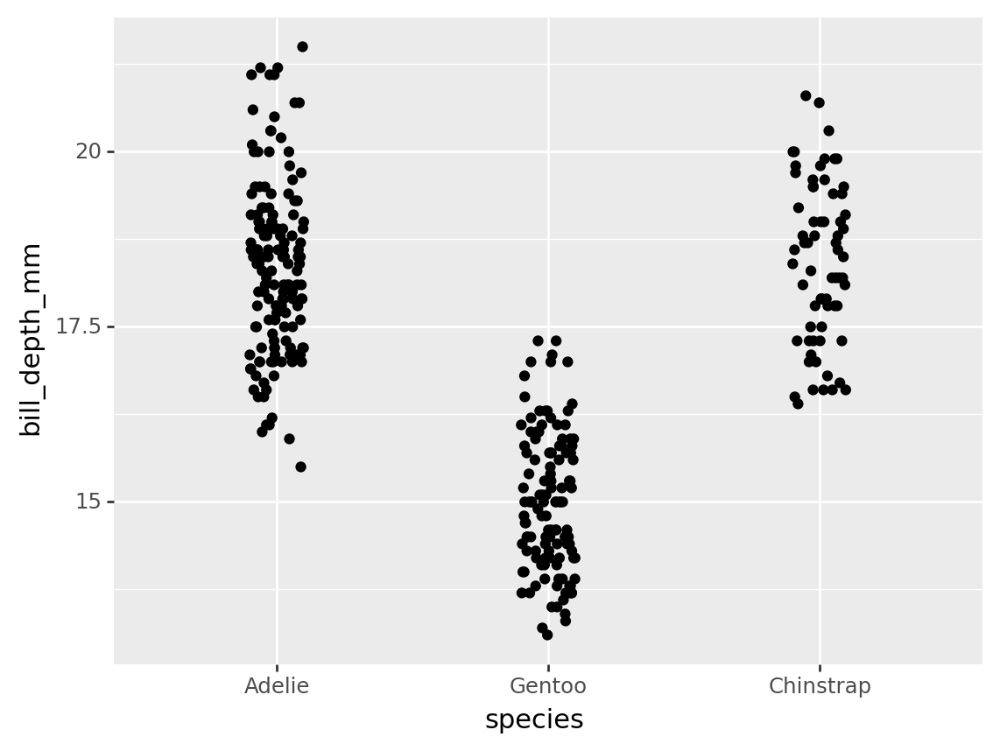
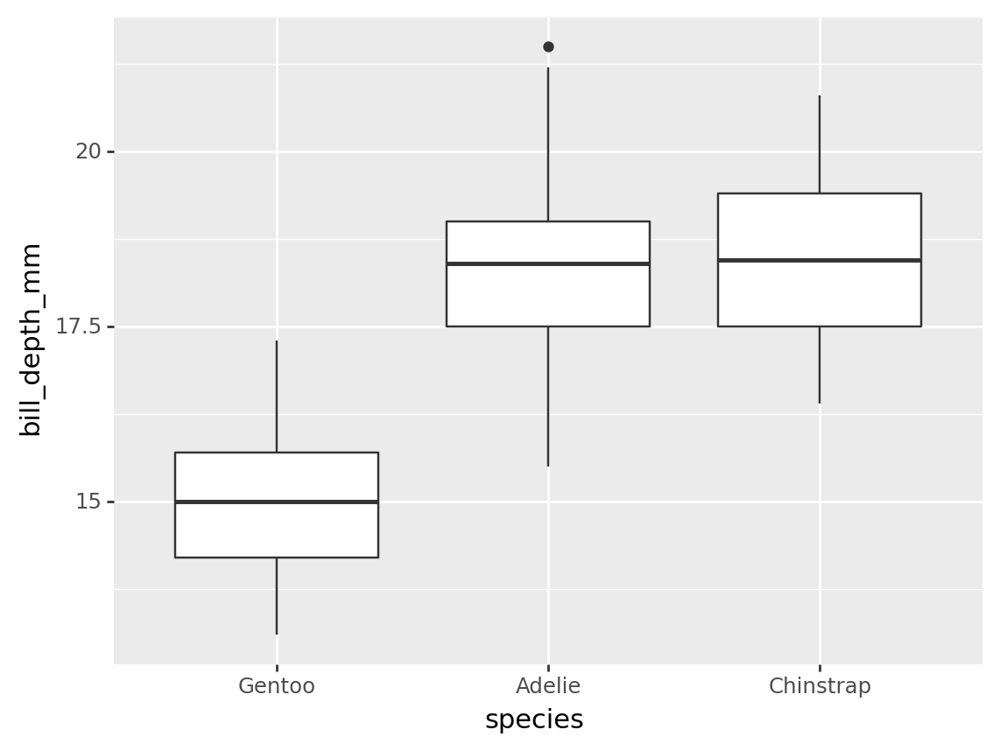
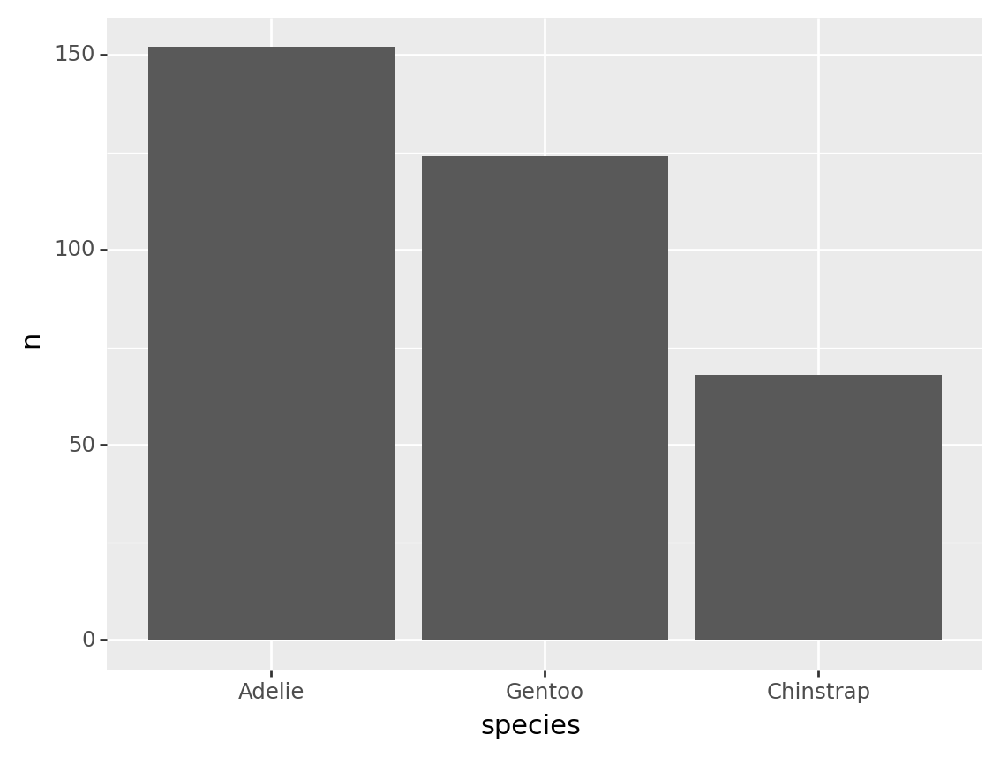
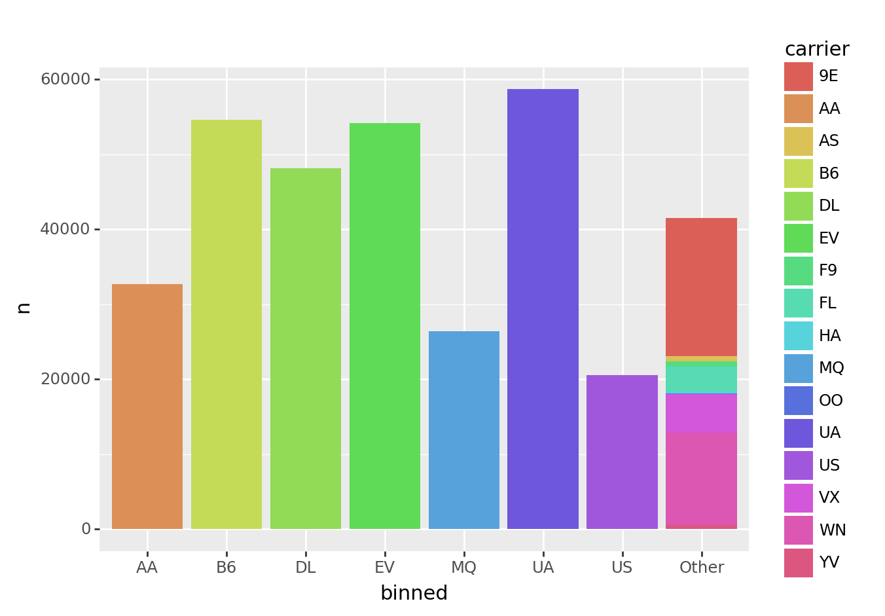
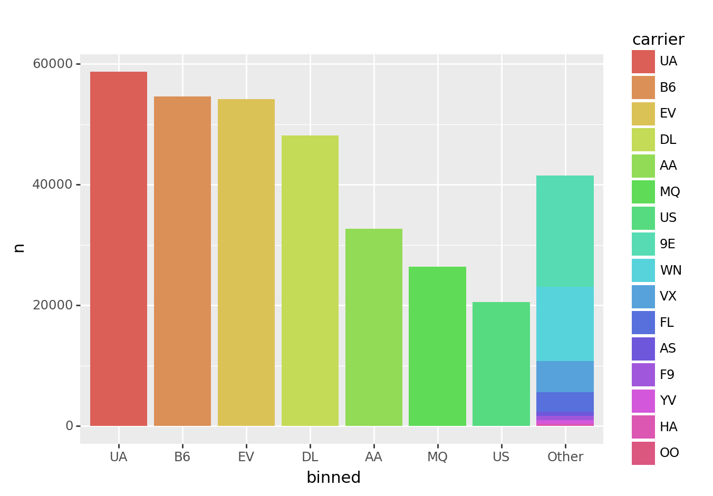

import pandas as pd
from siuba import _, count, mutate
from siuba.dply.forcats import fct_inorder, fct_infreq, fct_reorder, fct_lump
from siuba.data import penguinsCategoricals (forcats)
Categoricals are a way of representing columns of data, that provide:
- categories: a custom ordering to use when sorting the values.
- codes: a compressed representation of the data as integers.
While codes were historically important for representing large columns of data, the big value of categoricals today is as a tool for customizing order in plots. This might seem like a small job, but as it turns out it is very important in data analysis.
This page will discuss the pandas.Categorical class for creating categoricals, as well as a helper submodule siuba.dply.forcats with helper functions for working with this kind of data.
Required datasets
This page uses the nycflights13 dataset, which can be installed using pip:
pip install nycflights13Overview
Here is a simple pd.Categorical representing a column with 3 values.
x = ["front", "middle", "back"]
a_cat = pd.Categorical(x)
a_cat['front', 'middle', 'back']
Categories (3, object): ['back', 'front', 'middle']Notice that the bottom line of the print out shows the categories ordered as ['back', 'front', 'middle']. By default, pd.Categorical categories are in (roughly) alphabetical order. Ideally, we’d have them in an order like front, middle, back!
One way to do this, is to use fct_inorder() to order by first observed first, second observed second, etc..
fct_inorder(x)['front', 'middle', 'back']
Categories (3, object): ['front', 'middle', 'back']The remaining sections will focus on two kinds of categorical helper functions:
- functions for ordering category levels.
- functions for grouping categories together.
However, before we do that, let’s go through a few useful ways to interact with categoricals.
Core attributes
a_cat.codesarray([1, 2, 0], dtype=int8)a_cat.categoriesIndex(['back', 'front', 'middle'], dtype='object')a_cat.orderedFalseWrapping in pd.Series
pandas often wraps categoricals in a Series object.
a_cat2 = pd.Categorical(["b", "a", "c"])
ser = pd.Series(a_cat2)
ser0 b
1 a
2 c
dtype: category
Categories (3, object): ['a', 'b', 'c']For example, any time you create a DataFrame column out of a categorical, it gets wrapped in a pd.Series.
df = pd.DataFrame({"some_cat": a_cat2})
print(type(df.some_cat))
df.some_cat<class 'pandas.core.series.Series'>0 b
1 a
2 c
Name: some_cat, dtype: category
Categories (3, object): ['a', 'b', 'c']
Note
99% of the time when doing data analysis, your categorical is wrapped in a Series.
Note that accessor methods like .str.upper() are available on the series, and the underlying category attributes are availble using the .cat accessor.
ser.str.upper()0 B
1 A
2 C
dtype: objectser.cat.codes0 1
1 0
2 2
dtype: int8You can get the underlying categorical out using the .array property.
ser.array['b', 'a', 'c']
Categories (3, object): ['a', 'b', 'c']Using in verbs
The functions in siuba.dplyr.forcats can be used with lazy expressions.
fct_inorder(_.species)█─'__call__'
├─█─'__custom_func__'
│ └─<function fct_inorder at 0x7f93019ca3b0>
└─█─.
├─_
└─'species'Note how the above output is a lazy expression, which can be used inside verbs like mutate():
(penguins
>> mutate(
species_cat = fct_inorder(_.species),
species_cat2 = _.species.astype("category"),
)
)| species | island | bill_length_mm | bill_depth_mm | flipper_length_mm | body_mass_g | sex | year | species_cat | species_cat2 | |
|---|---|---|---|---|---|---|---|---|---|---|
| 0 | Adelie | Torgersen | 39.1 | 18.7 | 181.0 | 3750.0 | male | 2007 | Adelie | Adelie |
| 1 | Adelie | Torgersen | 39.5 | 17.4 | 186.0 | 3800.0 | female | 2007 | Adelie | Adelie |
| ... | ... | ... | ... | ... | ... | ... | ... | ... | ... | ... |
| 342 | Chinstrap | Dream | 50.8 | 19.0 | 210.0 | 4100.0 | male | 2009 | Chinstrap | Chinstrap |
| 343 | Chinstrap | Dream | 50.2 | 18.7 | 198.0 | 3775.0 | female | 2009 | Chinstrap | Chinstrap |
344 rows × 10 columns
Order categories by counts with fct_infreq()
Use fct_infreq to order category levels by their frequency in the data.
fct_infreq(penguins.species)0 Adelie
1 Adelie
...
342 Chinstrap
343 Chinstrap
Length: 344, dtype: category
Categories (3, object): ['Adelie', 'Gentoo', 'Chinstrap']In the output above, the category ordering shows us that “Adelie” is most frequent in the data, followed by “Gentoo”, and then “Chinstrap”.
We can verify this explicitly by using the verb count() to tally up each species.
tbl_species_count = penguins >> count(_.species)
tbl_species_count| species | n | |
|---|---|---|
| 0 | Adelie | 152 |
| 1 | Chinstrap | 68 |
| 2 | Gentoo | 124 |
Ordering by frequency is helpful for giving viewers a rough sense for which groups have less data in your plots.
For example, the code below plots each species on the x-axis, bill_depth_mm on the y-axis. It orders the categories of species by frequency, so those with the most data are shown on the left.
from plotnine import ggplot, aes, geom_point, position_jitter
(penguins
>> mutate(species = fct_infreq(_.species))
>> ggplot(aes("species", "bill_depth_mm"))
+ geom_point(position=position_jitter(width=.1, height=0))
)/opt/hostedtoolcache/Python/3.10.6/x64/lib/python3.10/site-packages/plotnine/layer.py:412: PlotnineWarning: geom_point : Removed 2 rows containing missing values.
<ggplot: (8766816986674)>Note that the position_jitter(width=.1, height=0) tells the plot to randomly adjust the width of each point between +-.1 (where the distance between each species label is 1).
General reordering with fct_reorder()
Use fct_reorder() to reorder the categories of a column, based on another column.
This function takes 3 main arguments:
- A column to copy and return with reordered categories.
- A column used to calculate the new ordering.
- An optional function that performs a calculation (defaults to calculating the median).
For example, the code below reorders the categories of the species column.
fct_reorder(penguins.species, penguins.bill_depth_mm, "mean")0 Adelie
1 Adelie
...
342 Chinstrap
343 Chinstrap
Length: 344, dtype: category
Categories (3, object): ['Gentoo', 'Adelie', 'Chinstrap']Note that it reorders species based on the mean of bill_depth_mm within each category.
Note
Currently, the easiest way to specify a calculation is by passing a string, like "mean". Under the hood, fct_reorder() calls pd.Series.agg(), so you could also pass a lambda or function directly.
Basic example
The code below reorders species using the default function (“median”) over bill_depth_mm. This results in boxplots are ordered from lowest to highest median.
from plotnine import ggplot, aes, geom_boxplot
(penguins
>> mutate(species = fct_reorder(_.species, _.bill_depth_mm))
>> ggplot(aes("species", "bill_depth_mm"))
+ geom_boxplot()
)/opt/hostedtoolcache/Python/3.10.6/x64/lib/python3.10/site-packages/plotnine/layer.py:334: PlotnineWarning: stat_boxplot : Removed 2 rows containing non-finite values.
<ggplot: (8766814428299)>Used with count
A common use for fct_reorder is to reorder a rolled up count.
For example, the code below counts the number of rows per species.
tbl_penguin_species = penguins >> count(_.species)
tbl_penguin_species| species | n | |
|---|---|---|
| 0 | Adelie | 152 |
| 1 | Chinstrap | 68 |
| 2 | Gentoo | 124 |
Suppose we had a table like this one, we might want to reorder the categories based on the n column.
fct_reorder(tbl_penguin_species.species, tbl_penguin_species.n, desc=True)0 Adelie
1 Chinstrap
2 Gentoo
dtype: category
Categories (3, object): ['Adelie', 'Gentoo', 'Chinstrap']Note that above we used the desc=True argument to put the categories in descending order. Because there is only entry per category level, the default function (“median”) just returns that value or n. This results in categories ordered by n.
Here is the same calculation used to reorder the bars on a plot.
from plotnine import ggplot, aes, geom_col
(tbl_penguin_species
>> mutate(species = fct_reorder(_.species, _.n, desc=True))
>> ggplot(aes("species", "n"))
+ geom_col()
)
<ggplot: (8766814718574)>Binning categories with fct_lump()
While functions like fct_infreq() and fct_reorder() change the order of categories, functions like fct_lump() reduce the number of categories.
Use fct_lump() to lump categories with fewer observations into a single category (e.g. “Other”).
Basic example
For example, let’s look at the nycflights13 table flights.
from nycflights13 import flights
flights| year | month | day | dep_time | sched_dep_time | dep_delay | arr_time | sched_arr_time | arr_delay | carrier | flight | tailnum | origin | dest | air_time | distance | hour | minute | time_hour | |
|---|---|---|---|---|---|---|---|---|---|---|---|---|---|---|---|---|---|---|---|
| 0 | 2013 | 1 | 1 | 517.0 | 515 | 2.0 | 830.0 | 819 | 11.0 | UA | 1545 | N14228 | EWR | IAH | 227.0 | 1400 | 5 | 15 | 2013-01-01T10:00:00Z |
| 1 | 2013 | 1 | 1 | 533.0 | 529 | 4.0 | 850.0 | 830 | 20.0 | UA | 1714 | N24211 | LGA | IAH | 227.0 | 1416 | 5 | 29 | 2013-01-01T10:00:00Z |
| ... | ... | ... | ... | ... | ... | ... | ... | ... | ... | ... | ... | ... | ... | ... | ... | ... | ... | ... | ... |
| 336774 | 2013 | 9 | 30 | NaN | 1159 | NaN | NaN | 1344 | NaN | MQ | 3572 | N511MQ | LGA | CLE | NaN | 419 | 11 | 59 | 2013-09-30T15:00:00Z |
| 336775 | 2013 | 9 | 30 | NaN | 840 | NaN | NaN | 1020 | NaN | MQ | 3531 | N839MQ | LGA | RDU | NaN | 431 | 8 | 40 | 2013-09-30T12:00:00Z |
336776 rows × 19 columns
This table has a column for carrier that lists each agency running flights. We can use the verb count() to quickly see how many unique carriers there are, and get a feel for how many flights each has run.
tbl_carrier_counts = flights >> count(_.carrier, sort=True)
tbl_carrier_counts| carrier | n | |
|---|---|---|
| 0 | UA | 58665 |
| 1 | B6 | 54635 |
| ... | ... | ... |
| 14 | HA | 342 |
| 15 | OO | 32 |
16 rows × 2 columns
Notice two pieces:
- There are 16 rows, so 16 carriers
- There is a big difference between the number of
"UA"and"OO"flights (58,665 vs 32).
Let’s use fct_lump() to keep only the 7 biggest carriers, and relable the rest to “Other”.
fct_lump(tbl_carrier_counts.carrier, w=tbl_carrier_counts.n, n=7)0 UA
1 B6
...
14 Other
15 Other
Length: 16, dtype: category
Categories (8, object): ['AA', 'B6', 'DL', 'EV', 'MQ', 'UA', 'US', 'Other']In the code above, we told fct_lump() to lump categories for carrier, weighted by the n column, and resulting in n=7 of the original groups.
Here’s an example using the above code to order a barchart.
from plotnine import ggplot, aes, geom_col
(tbl_carrier_counts
>> mutate(binned = fct_lump(_.carrier, w=_.n, n=7))
>> ggplot(aes("binned", "n", fill="carrier"))
+ geom_col()
)
<ggplot: (8766814718394)>Notice that all of the smaller carriers are grouped into the “Other” bar.
This plot looks okay, but there are two limitations:
- The first bar on the left is “AA”, but the color legend is in alphabetical order, so starts with “9E”. It would be nice if the legend were in the same order as the bars.
- The bars themselves are not ordered by frequency.
We’ll tackle these pieces in the section below.
Respecting category order
fct_lump() preserves existing category order. This enables you to order categories before collapsing them down.
from plotnine import ggplot, aes, geom_col
(tbl_carrier_counts
>> mutate(carrier = fct_inorder(_.carrier))
>> mutate(binned = fct_lump(_.carrier, w=_.n, n=7))
>> ggplot(aes("binned", "n", fill="carrier"))
+ geom_col()
)
<ggplot: (8766814052692)>